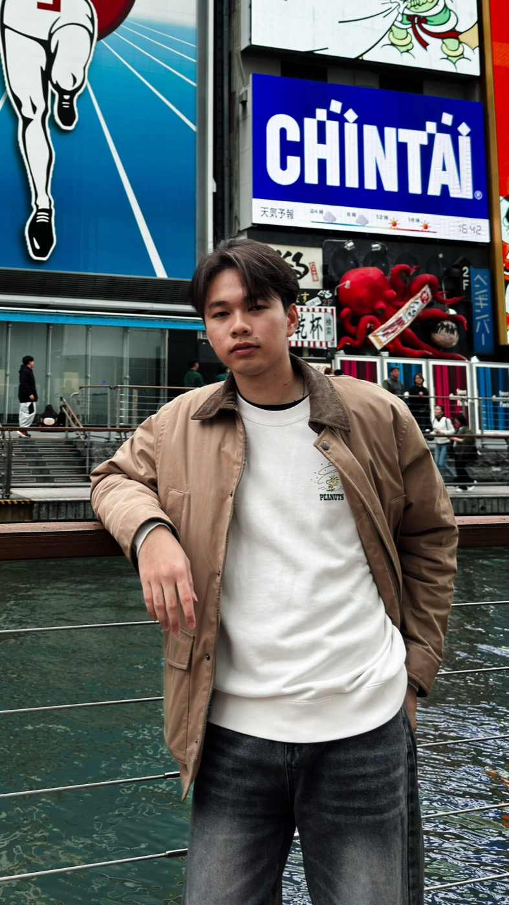
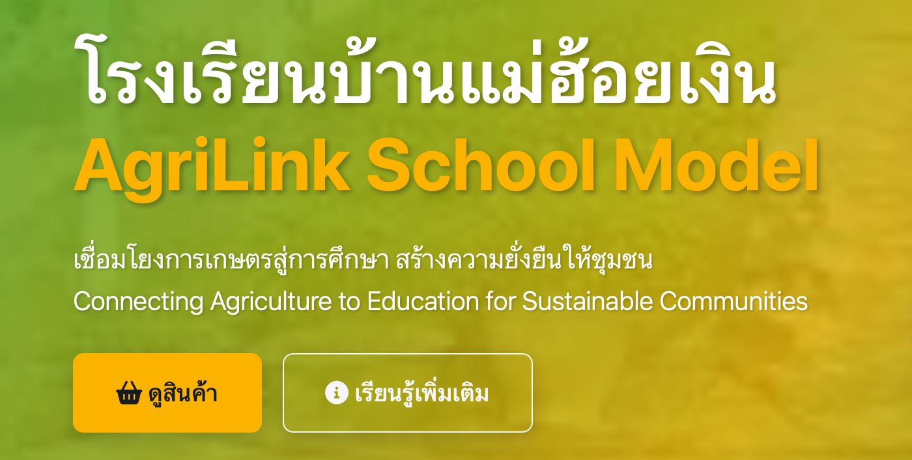
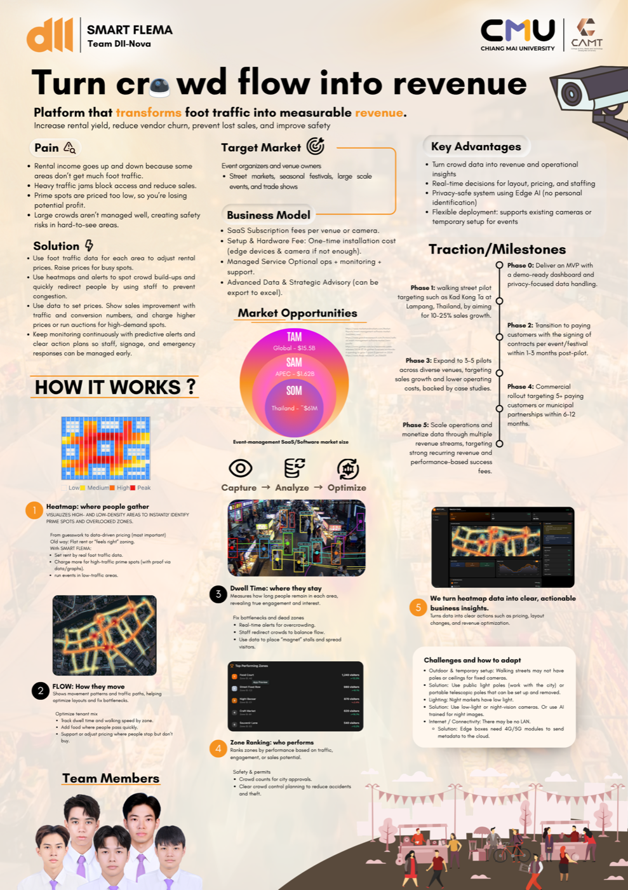
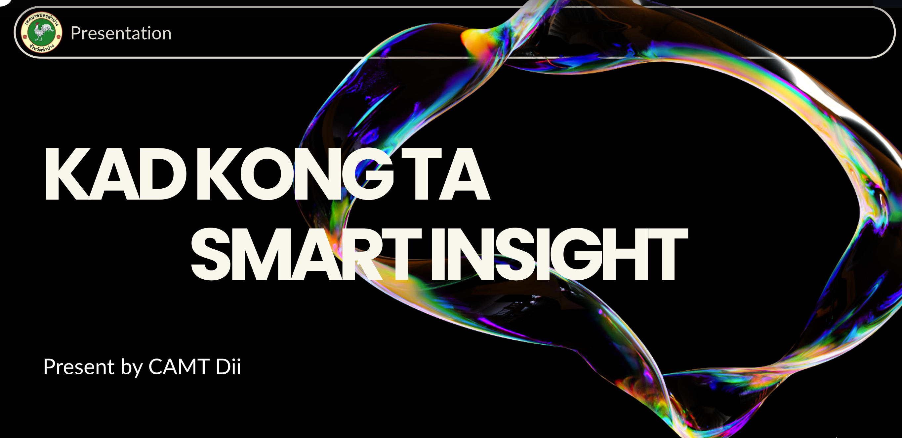
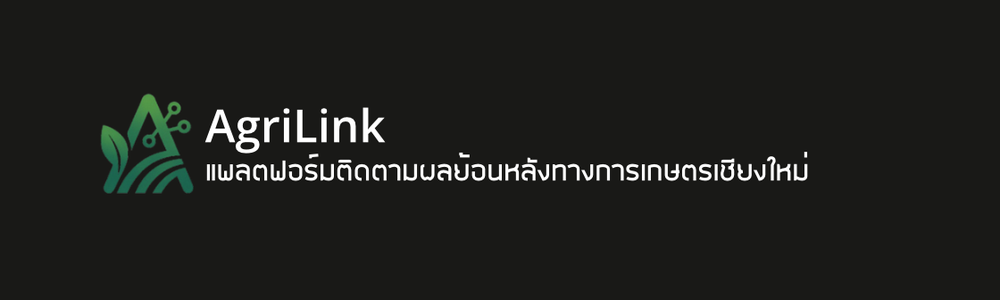
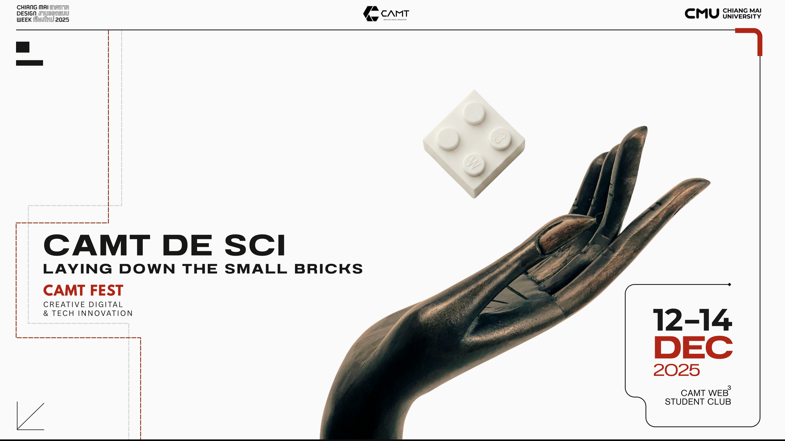
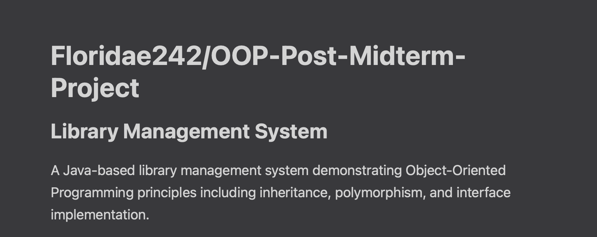

Start with the decision.
“What should we do?” comes before information that does not change the plan.
MEMBER 01 / PM-PO + QA
I translate between people who see the same problem differently.
A Digital Industry student at the College of Arts, Media and Technology who works across requirements, product thinking, project coordination, and front-end delivery.
View selected work Meet the team
01 / ABOUT
I am Naruephon “Tle” Yotmao, a Digital Industry student at CAMT, Chiang Mai University. My target roles are Business Analyst and Project Manager.
I work at the seam between people and software: listening to stakeholder needs, turning unclear problems into requirements and KPIs, and helping a team move from idea to a usable result.
My Nexora contribution: PM/PO, requirement planning, shared-page content, QA, and portfolio delivery.
02 / EDUCATION
Chiang Mai University
B.Sc. in Digital Industry Integration, College of Arts, Media and Technology.
Thung Saliam Chanupatham School
Engineering Preparation programme.
03 / HOW I WORK
“What should we do?” comes before information that does not change the plan.
Users, teachers, vendors, and operators already understand the friction.
A prototype in front of a real user creates better questions.
04 / SELECTED WORK

GROUP PROJECT / REQUIREMENTS + PROTOTYPE
Free e-commerce platform and CSR dashboard connecting small school smart-farms with parents and the community. My role was the bridge between client needs and the prototype.
The project focused on schools where produce was tracked on paper, teachers carried heavy administrative work, and parents lacked visibility.

COMPETITION / RESEARCH + PITCH
A camera-based foot traffic heatmap concept for street markets and walking street events. I initiated the idea by refining a Smart City concept for a focused market problem.
It won the Popular Vote award at the 3rd ICT Startup Competition 2026.

ACADEMIC / PROJECT MANAGEMENT + FRONT-END
A city management platform using CCTV, AI, weather, and air-quality data. I coordinated stakeholders while building the dashboard front-end.
The People Counting module remained incomplete and became a lesson in realistic scope.

Hackathon prototype connecting farmers and buyers with AI, IoT, and QR Code traceability.

Peer-to-peer communication system for disaster scenarios, demonstrated at CAMT FEST.

Java OOP coursework system with CRUD, CSV persistence, and polymorphic late-fee calculation.
05 / EXPERIENCE
WEB3 Student Club
Built an ESP32 mesh communication system and presented the live
demo at CAMT FEST.
Deepa Coding Thailand
Taught high school and elementary students to write their first
lines of code.
Nexora Web Studio
PM/PO and QA for the group website project.
06 / CONTACT
Open to Business Analyst and Project Manager roles, internships, and co-ops.
naruephonyotmao@gmail.com+66 080-106-6891Return to Team ProfileReturn to Nexora Home